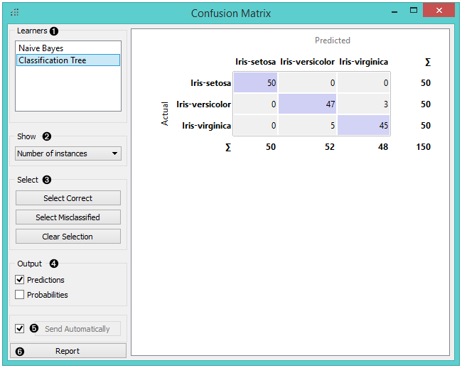
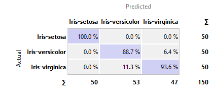
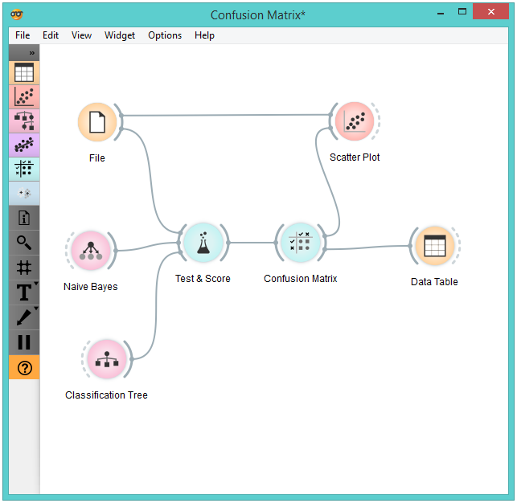
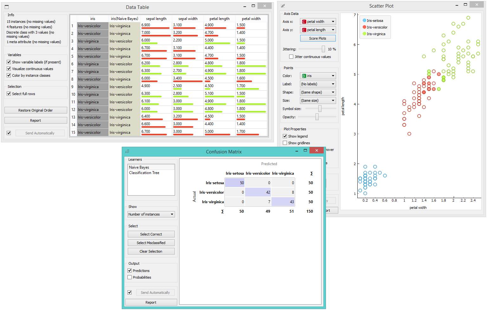

Confusion Matrix
Shows proportions between the predicted and actual class.
Inputs
- Evaluation results: results of testing classification algorithms
Outputs
- Selected Data: data subset selected from confusion matrix
- Data: data with the additional information on whether a data instance was selected
The Confusion Matrix gives the number/proportion of instances between the predicted and actual class. The selection of the elements in the matrix feeds the corresponding instances into the output signal. This way, one can observe which specific instances were misclassified and how.
The widget usually gets the evaluation results from Test & Score; an example of the schema is shown below.

- When evaluation results contain data on multiple learning algorithms, we have to choose one in the Learners box. The snapshot shows the confusion matrix for Tree and Naive Bayesian models trained and tested on the iris data. The right-hand side of the widget contains the matrix for the naive Bayesian model (since this model is selected on the left). Each row corresponds to a correct class, while columns represent the predicted classes. For instance, four instances of Iris-versicolor were misclassified as Iris-virginica. The rightmost column gives the number of instances from each class (there are 50 irises of each of the three classes) and the bottom row gives the number of instances classified into each class (e.g., 48 instances were classified into virginica).
- In Show, we select what data we would like to see in the matrix.
- Number of instances shows correctly and incorrectly classified instances numerically.
- Proportions of predicted shows how many instances classified as, say, Iris-versicolor are in which true class; in the table we can read the 0% of them are actually setosae, 88.5% of those classified as versicolor are versicolors, and 7.7% are virginicae.
- Proportions of actual shows the opposite relation: of all true versicolors, 92% were classified as versicolors and 8% as virginicae. 
- In Select, you can choose the desired output.
- Correct sends all correctly classified instances to the output by selecting the diagonal of the matrix.
- Misclassified selects the misclassified instances.
- None annuls the selection. As mentioned before, one can also select individual cells of the table to select specific kinds of misclassified instances (e.g. the versicolors classified as virginicae).
- When sending selected instances, the widget can add new attributes, such as predicted classes or their probabilities, if the corresponding options Predictions and/or Probabilities are checked.
- The widget outputs every change if Send Automatically is ticked. If not, the user will need to click Send Selected to commit the changes.
- Produce a report.
Example
The following workflow demonstrates what this widget can be used for.

Test & Score gets the data from File and two learning algorithms from Naive Bayes and Tree. It performs cross-validation or some other train-and-test procedures to get class predictions by both algorithms for all (or some) data instances. The test results are fed into the Confusion Matrix, where we can observe how many instances were misclassified and in which way.
In the output, we used Data Table to show the instances we selected in the confusion matrix. If we, for instance, click Misclassified, the table will contain all instances which were misclassified by the selected method.
The Scatter Plot gets two sets of data. From the File widget it gets the complete data, while the confusion matrix sends only the selected data, misclassifications for instance. The scatter plot will show all the data, with bold symbols representing the selected data.
